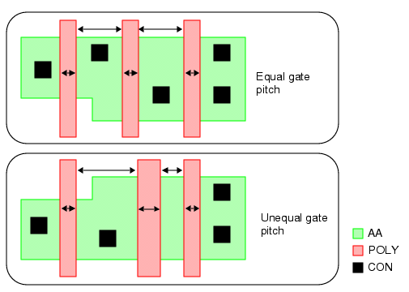

Checking Equal Gate Pitch per Active Area
You can identify active area (AA) regions where gates are not equally spaced apart, have unequal widths, or both.
Figure 1. Gate Pitch

Try It!  |
Calibre Advanced DRC (eqDRC) Tutorial and Example Kit Go to this page on Support Center to download the complete eKit. This example is in the grid_pitch_checks/equal_gate_pitch_per_aa example directory. |